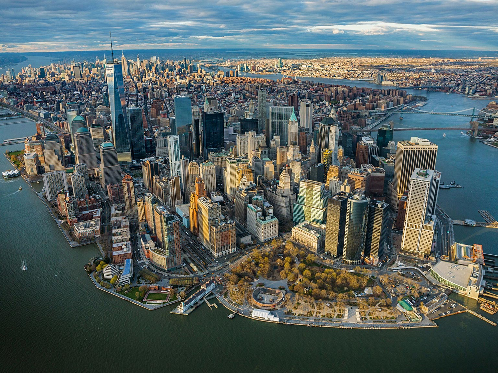

- Intro
- Vertigo
- Tilt Shift
- Summary
The Final Project
Karl Cempron: CS194-26-AEG
The purpose of this project is to explore some additional imaging techniques. In particular, I chose to attempt the vertigo shot as well as applying tilt shift effects to images.
A classic Vertigo Shot!
The Vertigo Shot
The Vertigo shot is a video camera effect first utilized in Alfred Hitchcock's movie Vertigo. This effect relies on changing the camera's field of view, while keeping the subject the same size within the frame. This results in a warping sensation that makes the background of the subject seem either deeper or more shallow.
To emulate the technique in still photos, I captured a series of photos, stepping back a small distance and zoomed in slightly on the subject. I then used Photoshop to align the photos more precisely.
Candle Hall Vertigo Shot.
Shot 1
Shot 2
Shot 3
 Shot 4
Shot 4
Shot 5
Bottle Vertigo Shot
 Shot 1
Shot 1
Shot 2
Shot 3
Shot 4
Tilt Shift
When capturing a photo of something nearby within a few inches of the camera, the depth of field is relatively shallow. Objects at a certain distance are in focus, but anything slightly closer to/further from the camera will be blurry.
Tilt-shift photography is a technique used to simulate a shallow depth of field. This technique can be simulated using a gradient of Gaussian blurring. To do this, I first chose a horizontal section of the image to keep in focus. Since objects at the same distance from the camera often lie along a single line in the image, I used a clicking GUI to select a point to define the location of the horizontal line.
I then greated a mask that applies a gradient as it approaches the edges of the images. The distribution of gradient depends on the distance from the horizontal line to each edge respectively.
Lastly, I took the original image and successively blurred it a factor = 10^1.5 times (with some images requiring a factor = 10^2 = 100 to create a better blur). After each blur, I sampled rows from a given blurred image defined by each row from the mask and the source image and inserted them into the output image. This results in an image that is in focus at/around the focus line, and gets progressively blurrier until reaching the image borders.
As a final touch, I altered the contrast and saturation of the image to give it a more toy-like appearance.
Original Kyoto Image
Kyoto Mask
Tilt Shift Kyoto
Original Coast Image
 Coast Mask
Coast Mask
Tilt Shift Coast
Original NYC Image
NYC Mask
Tilt Shift NYC
Summary
It was great being able to implement the Vertigo shot after seeing an example of it in the first week of class! Though some of my shots were unsteady and unfocused, I was still impressed that I was able to emulate the effect somewhat. The tilt shift effect was also interesting to implement as it was able to make an image appear toy-like, as if it was shot from up close. I enjoyed exploring both of these techniques and enjoyed the class overall.